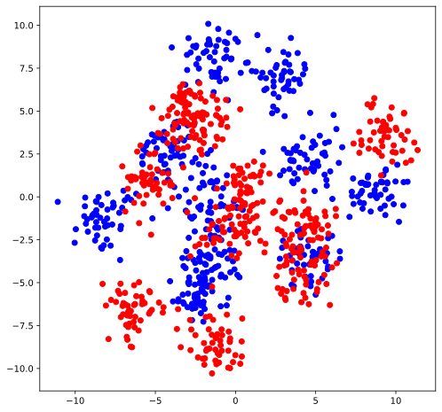

Introduction à Scikit-Learn
Documentation complète disponible en suivant ce lien. En particulier le schéma ici done une vue assez graphique des possibilités de la librairie.
Algorithmes implémentés dans Scikit-Learn
Données fournies par Scikit-Learn
%matplotlib inline
from matplotlib import pyplot as plt
plt.rcParams["figure.figsize"] = (8, 8)
plt.rcParams["figure.max_open_warning"] = -1
import numpy as np
np.set_printoptions(precision=3)
from notebook.services.config import ConfigManager
cm = ConfigManager()
cm.update('livereveal', {'width': 1440, 'height': 768, 'scroll': True, 'theme': 'simple'})
import warnings
warnings.simplefilter(action="ignore", category=FutureWarning)
warnings.simplefilter(action="ignore", category=UserWarning)
warnings.simplefilter(action="ignore", category=RuntimeWarning)
---------------------------------------------------------------------------
ModuleNotFoundError Traceback (most recent call last)
Cell In[1], line 9
6 import numpy as np
7 np.set_printoptions(precision=3)
----> 9 from notebook.services.config import ConfigManager
10 cm = ConfigManager()
11 cm.update('livereveal', {'width': 1440, 'height': 768, 'scroll': True, 'theme': 'simple'})
ModuleNotFoundError: No module named 'notebook.services'
Scikit-Learn#
[Retour]
Présentation#
[Retour]
Bibliothèque de fonctions d’analyse de donnés et de Machine learning en Python
Simple et efficace, bien établie
De nombreux contributeurs
Licence BSD 3
Logiciels Python pour l’analyse de données#
[Retour]

Algorithmes implémentés dans Scikit-Learn#
[Retour]
Apprentissage supervisé#
Modèles linéaires (Ridge, Lasso, Elastic Net, …)
SVM
Méthodes à base d’arbre (arbres de décision, forêts aléatoires, bagging, GBRT, …)
Plus proches voisins
Réseaux de neurones
Processus gaussiens
Sélection de variable
Apprentissage non supervisé#
Clustering (KMeans, hiérarchique, …)
Réduction de dimension linéaire (PCA, ICA, …) et non linéaire (ISOMAP, LLE,..)
Estimation de densité
Détection de points aberrants.
Sélection et évaluation de modèles#
Validation croisée
Grid-search
Métriques
…#
Données fournies par Scikit-Learn#
[Retour]
Ensemble d’apprentissage \({\cal L} = (X, y)\) où :
les exemples sont donnés sous la forme d’un tableau (Numpy ou matrice éparse Scipy) \(X\) de taille
n_samples\(\times\)n_featuresà valeurs dans \({\cal X}\);les sorties (labels, valeurs réelles) \(y\), à valeurs dans \({\cal Y}\).
Classification supervisée : construire \(\varphi_{\cal L}: {\cal X} \mapsto {\cal Y}\) minimisant
avec \(L\) fonction de perte, par exemple \(L_{01}(Y,\hat{Y}) = 1(Y \neq \hat{Y})\).
Les algorithmes Scikit-learn sont vectorisés.
# Exemple
from sklearn.datasets import make_blobs
X, y = make_blobs(n_samples=1000, centers=20, random_state=123)
labels = ["b", "r"]
y = np.take(labels, (y < 10))
print(X)
print("Taille de X : ",X.shape)
print("5 premières composantes de y : ", y[:5])
print("Taille de y : ",y.shape)
[[-6.453 -8.764]
[ 0.29 0.147]
[-5.184 -1.253]
...
[-0.231 -1.608]
[-0.603 6.873]
[ 2.284 4.874]]
Taille de X : (1000, 2)
5 premières composantes de y : ['r' 'r' 'b' 'r' 'b']
Taille de y : (1000,)
# Affichage
plt.figure()
for label in labels:
mask = (y == label)
plt.scatter(X[mask, 0], X[mask, 1], c=label)
plt.show()

Données externes#
[Retour]
API unifiée#
[Retour]
Tous les algorithmes de Scikit-learn partagent une API commune composée des interfaces suivantes :
un
estimateurpour construire et fitter le modèle;un
predicteurpour faire des predictions;un
transformeurpour convertir les données.
Estimateur#
class Estimator(object):
def fit(self, X, y=None):
# Apprend le modèle sur les données
return self
Exemple d’application
from sklearn.neighbors import KNeighborsClassifier
# Paramètre de l'algorithme
clf = KNeighborsClassifier(n_neighbors=5)
clf.fit(X, y)
KNeighborsClassifier()
Andreas Mueller (contributeur scikit-learn) a proposé ce diagramme permettant de résumer les choix possibles d’algorithmes.
from IPython.display import Image
Image("TP1-flowchart.png")

Predicteur#
print(clf.predict(X[:5]))
['r' 'r' 'r' 'b' 'b']
# Probabilité des classes
print(clf.predict_proba(X[:5]))
[[0. 1. ]
[0. 1. ]
[0.2 0.8]
[0.6 0.4]
[0.8 0.2]]
Transformeur#
La plupart du temps, les données d’entrées doivent être pré-traitées pour une application efficace de l’algorithme de machine learning
class Transformer(object):
def fit(self, X, y=None):
return self
def transform(self, X):
"""Transforme X en Xt."""
return Xt
def fit_transform(self, X, y=None):
self.fit(X, y)
Xt = self.transform(X)
return Xt
# Illustration sur des données image : chiffres manuscrits.
from sklearn.datasets import load_digits
from sklearn.model_selection import train_test_split
digits = load_digits()
X, y = digits.data, digits.target
X_train, X_test, y_train, y_test = train_test_split(X, y, random_state=0)
Normalisation
from sklearn.preprocessing import StandardScaler
tf = StandardScaler()
tf.fit(X_train, y_train)
Xt_train = tf.transform(X_train)
# Importance du scaling pour certains algorithmes
from sklearn.svm import SVC
clf = SVC()
print("Score sans scaling =", clf.fit(X_train, y_train).score(X_test, y_test))
print("Score avec scaling =", clf.fit(tf.transform(X_train), y_train).score(tf.transform(X_test), y_test))
Score sans scaling = 0.9911111111111112
Score avec scaling = 0.9844444444444445
Sélection de descripteurs
# Selection des 10 meilleurs descripteurs d'après le F-score de l'ANOVA
from sklearn.feature_selection import SelectKBest, f_classif
tf = SelectKBest(score_func=f_classif, k=10)
Xt = tf.fit_transform(X_train, y_train)
Pipelines#
[Retour]
Les transformeurs peuvent être enchaînés pour former des pipelines. Le pipeline peut contenir des classifieurs en bout de chaîne pour former une chaîne de traitement complète.
from sklearn.pipeline import Pipeline
from sklearn.preprocessing import StandardScaler
from sklearn.feature_selection import SelectKBest
from sklearn.ensemble import RandomForestClassifier
clf = Pipeline(steps=[('scaler',StandardScaler()),
('kbest',SelectKBest(score_func=f_classif, k=10)),
('class',RandomForestClassifier())])
clf.fit(X_train, y_train)
print(clf.predict_proba(X_test)[:5])
print("K =", clf.get_params()["kbest__k"])
[[0. 0. 0.69 0.02 0. 0.04 0. 0.2 0.05 0. ]
[0.01 0. 0. 0. 0.01 0.01 0.02 0.03 0.91 0.01]
[0. 0.09 0.79 0.04 0. 0. 0. 0.02 0.06 0. ]
[0. 0. 0. 0. 0. 0.01 0.99 0. 0. 0. ]
[0. 0. 0. 0. 0.02 0.01 0.97 0. 0. 0. ]]
K = 10